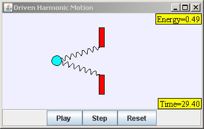

Adding an external sinusoidal driving force to the Simple Harmonic Oscillator model gives rise to the Driven Harmonic Oscillator model. If we include a viscous drag force (friction), the net force on the mass m is now the sum of three forces.
Fnet = Fspring + Fdrag + Fexternal
where Fspring = -k x, Fdrag = -b v, and Fexternal = FD sin ( ωD t ). The spring constant k, the damping constant b, the drive amplitude FD, and the drive frequency ωD along with the initial conditions x(t=0) and v(t=0) are inputs into the model.
Substituting the net force into Newton's Second Law gives the dynamical equation for the sinusoidally driven oscillator
d2x / dt2 = - (k/m) x - (b/m) dx / dt + (FD /m) sin ( ωD t ) .
Note that the drive frequency ωD is not the natural frequency ω0 = (k/m)1/2 of the undriven simple harmonic motion. As shown in the activities, the oscillator's displacement x is a maximum when it is driven at it natural frequency ωD = ω0 . The analytic solution the differential equation is well know and consists of two parts. The first part, known as the homogeneous or transient solution, is the solution without a driving force. The solution is a damped sinusoidal oscillation if the damping constant b < 4 m k is
xH(t) = A0 e-bt/2m cos( ω0t + φ) .
Note that the homogenous solution will not be sinusoidal if b ≥ 4 m k. One modeling activity is to set the drive amplitude FD to zero and to vary the damping constant b in order to observe sinusoidal and non-sinusoidal homogeneous solutions.
The second part of the solution is known as the inhomogeneous or steady state solution. The inhomogeneous solution is a constant-amplitude sinusoidal function with frequency equal to the drive frequency ωD
xI(t) = A(ωD) cos( ωDt + γ) .
Although the amplitude is constant, its value A(ωD) depends on the drive frequency ωD and other parameters. The phase shift γ between the external force and the steady state solution is also function of ωD . The complete solution to the dynamical equations is the sum of the homogenous and inhomogeneous solutions.
x(t) = xH(t) + xI(t)
The Driven Harmonic Oscillator (SHO) model is designed to teach Ejs modeling. Right click within the simulation to examine this model in the Ejs modeling and authoring tool. See:
The Easy Java Simulations (EJS) documentation can be downloaded from the ComPADRE Open Source Physics collection and from the Ejs website.
This simulation was created by Wolfgang Christian and Francisco Esquembre using the Easy Java Simulations (Ejs) modeling tool. You can examine and modify this simulation if you have Ejs installed by right-clicking within a plot and selecting "Open Ejs Model" from the pop-up menu. Information about Ejs is available at: <http://www.um.es/fem/Ejs/>.